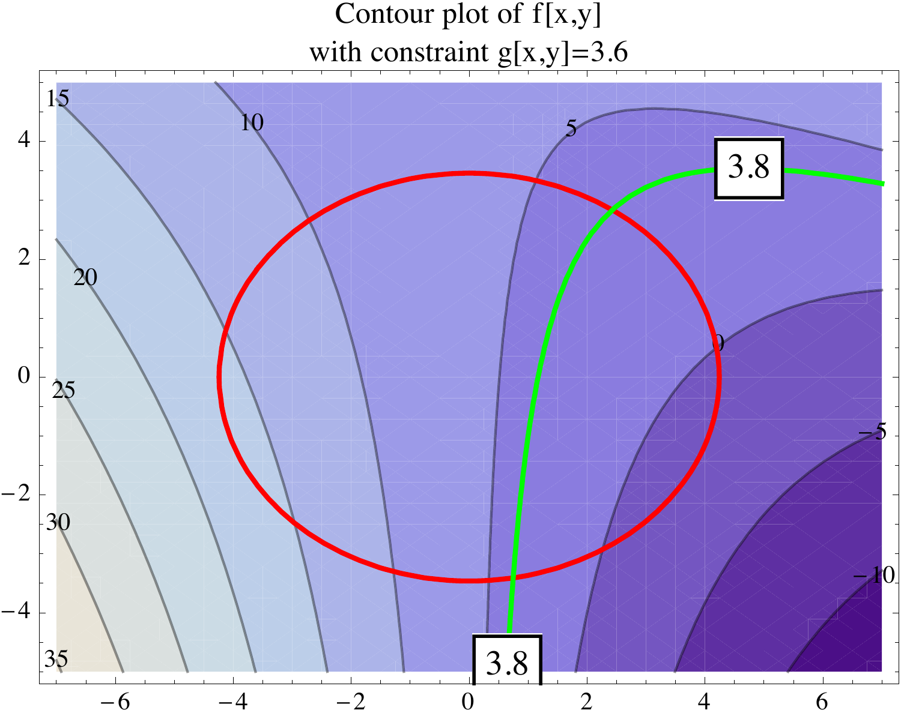
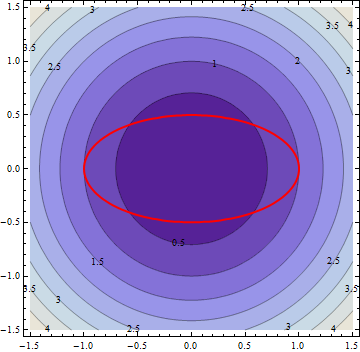

Section 14.8: Lagrange Multipliers
Partial Derivatives
MTH 310
Calculus III
Why Constrained Optimization?
In Section 14.7 we found absolute extrema by checking critical points and the boundary.
But what if the constraint is more complicated than a rectangular box?
Real-world examples:
- Maximize profit subject to a fixed budget
- Minimize material used to build a container with a required volume
- Find the hottest point on a wire bent into a curve
In each case we want to optimize \(f(x,y)\) (or \(f(x,y,z)\)) but we are restricted to points satisfying a constraint \(g(x,y) = k\).
A Motivating Example
Example 1
Find the absolute maximum and minimum of \(f(x,y) = 6 - 2x + 0.1x^2 + 0.3xy\) on the ellipse \(0.2x^2 + 0.3y^2 = 3.6\).
The constraint is that we only consider points \((x,y)\) lying on the ellipse. We can't just find critical points of \(f\) — the extrema occur on the ellipse.

Let's look at two approaches to this problem.
Approach 1: Parameterize the Constraint
Idea: Turn the constraint curve into a parametric curve, then substitute into \(f\) to get a single-variable problem.
The ellipse \(0.2x^2 + 0.3y^2 = 3.6\) can be parameterized as:
\[x = \sqrt{18}\cos t, \quad y = \sqrt{12}\sin t, \quad 0 \leq t < 2\pi\]
Now substitute into \(f\):
\[f(t) = f(x(t), y(t)) = 6 - 2\sqrt{18}\cos t + 0.1(18)\cos^2 t + 0.3\sqrt{18}\sqrt{12}\cos t \sin t\]
This is a single-variable calculus problem — find the absolute max/min on \([0, 2\pi)\).
The Geometry Behind Lagrange Multipliers
Think about walking along the constraint curve \(g(x,y) = k\). At most points, \(f\) is either increasing or decreasing as you walk.
At an extremum along the constraint, \(f\) is neither increasing nor decreasing — the level curves of \(f\) are tangent to the constraint curve.
Recall:
- \(\nabla f\) is perpendicular to level curves of \(f\)
- \(\nabla g\) is perpendicular to the constraint curve \(g = k\)
If \(\nabla f\) is parallel to \(\nabla g\), then there exists a scalar \(\lambda\) such that:
\[\nabla f = \lambda \nabla g\]
This scalar \(\lambda\) is called the Lagrange multiplier.
Geometric intuition: When \(\nabla f\) has a component along the constraint curve, you can still increase \(f\) by moving along the curve. Only when \(\nabla f\) is entirely perpendicular to the curve (parallel to \(\nabla g\)) have you reached an extremum.
The Method of Lagrange Multipliers
Definition 1: Method of Lagrange Multipliers
To find the maximum and minimum values of \(f(x,y,z)\) subject to the constraint \(g(x,y,z) = k\) (assuming these extreme values exist and \(\nabla g \neq \vec{0}\) on the surface \(g = k\)):
- Find all values of \(x, y, z\), and \(\lambda\) such that
\[\nabla f(x,y,z) = \lambda \nabla g(x,y,z) \quad \text{and} \quad g(x,y,z) = k\]
- Evaluate \(f\) at all the points \((x,y,z)\) found in step 1. The largest value is the maximum; the smallest is the minimum.
In two variables, \(\nabla f = \lambda \nabla g\) becomes the system:
\[f_x = \lambda g_x, \quad f_y = \lambda g_y, \quad g(x,y) = k\]
That's 3 equations in 3 unknowns (\(x\), \(y\), \(\lambda\)).
Approach 2: Lagrange Multipliers on the Ellipse
Let's revisit Example 1 using Lagrange multipliers.
\(f(x,y) = 6 - 2x + 0.1x^2 + 0.3xy\) and \(g(x,y) = 0.2x^2 + 0.3y^2 = 3.6\).
Step 1: Compute gradients.
\[\nabla f = \langle -2 + 0.2x + 0.3y, \; 0.3x \rangle\]
\[\nabla g = \langle 0.4x, \; 0.6y \rangle\]
Step 2: Set \(\nabla f = \lambda \nabla g\) and \(g = 3.6\):
\[-2 + 0.2x + 0.3y = 0.4\lambda x\]
\[0.3x = 0.6\lambda y\]
\[0.2x^2 + 0.3y^2 = 3.6\]
Example 2: Closest and Farthest from the Origin
Example 2
Find the maximum and minimum values of \(f(x,y) = x^2 + y^2\) on the ellipse \(x^2 + 4y^2 = 1\).

Set up: \(f(x,y) = x^2 + y^2\), \(g(x,y) = x^2 + 4y^2 = 1\).
Compute gradients: \(\nabla f = \langle 2x, 2y \rangle\), \(\nabla g = \langle 2x, 8y \rangle\).
Your Turn: Lagrange Practice
Example 3
Find the maximum and minimum values of \(f(x,y) = 3x + 4y\) on the circle \(x^2 + y^2 = 1\).
Hint: Set up \(\nabla f = \lambda \nabla g\) where \(g(x,y) = x^2 + y^2\).
Three Variables: \(f(x,y,z)\) with Constraint \(g(x,y,z) = k\)
The method extends naturally to functions of three variables.
Optimize \(f(x,y,z)\) subject to \(g(x,y,z) = k\):
\[\nabla f = \lambda \nabla g \quad \Longrightarrow \quad f_x = \lambda g_x, \quad f_y = \lambda g_y, \quad f_z = \lambda g_z\]
Plus the constraint: \(g(x,y,z) = k\).
That's 4 equations in 4 unknowns (\(x\), \(y\), \(z\), \(\lambda\)).
Example 4: Minimum Surface Area Box
Example 4
Find the dimensions of a rectangular box with volume \(1000 \text{ cm}^3\) that has the smallest surface area.
Set up the problem:
- Surface area: \(f(x,y,z) = 2xy + 2xz + 2yz\) ← minimize this
- Volume constraint: \(g(x,y,z) = xyz = 1000\)
Compute gradients:
\[\nabla f = \langle 2y + 2z, \; 2x + 2z, \; 2x + 2y \rangle\]
\[\nabla g = \langle yz, \; xz, \; xy \rangle\]
When to Use Lagrange Multipliers
How does Lagrange compare with other optimization methods from Chapter 14?
| Method | When to Use |
|---|---|
| Critical points (14.7) | No constraints; find local/absolute extrema on an open region |
| Closed & bounded (14.7) | Extrema on a region with boundary; check interior + boundary |
| Parameterize the constraint | Constraint has a simple parameterization (circle, line, etc.) |
| Lagrange multipliers (14.8) | Constraint is a curve or surface defined by \(g = k\); no easy parameterization |